On peut montrer qu’il y a 35 hexominos non superposoables (figure formèe par
6 carrés ayant au moins une arrête en commun) et que parmi ces 35 hexominos
il y en a 11 qui peuvent être le patron d’un cube.
Ce sont :
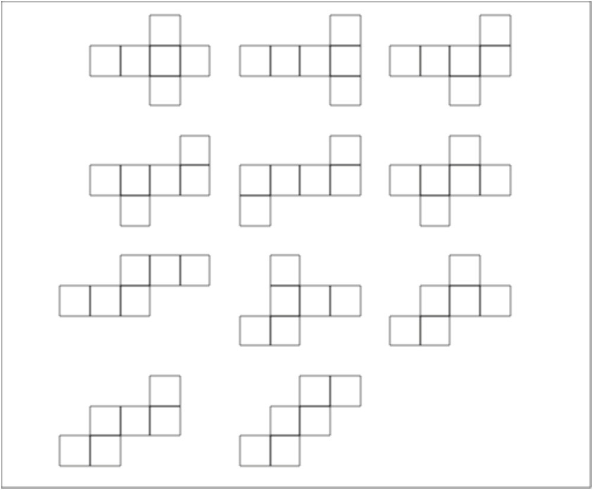
Pour faire le dessin ci-dessus on a tapé :
patron(a):={
local L,L1,L2,L3,L4,L5,L6;
L(a):=carre(a+k,a+1+k)$(k=0..3);
L1:=L(a),carre(a+2+i,a+3+i),carre(a+2-i,a+3-i);
a:=a+5;
L2:=L(a),carre(a+3+i,a+4+i),carre(a+3-i,a+4-i);
a:=a+5;
L3:=L(a),carre(a+3+i,a+4+i),carre(a+2-i,a+3-i);
a:=a-4i-10;
L4:=L(a),carre(a+3+i,a+4+i),carre(a+1-i,a+2-i);
a:=a+5;
L5:=L(a),carre(a+3+i,a+4+i),carre(a-i,a+1-i);
a:=a+5;
L6:=L(a),carre(a+2+i,a+3+i),carre(a+1-i,a+2-i);
retourne L1,L2,L3,L4,L5,L6;
}:;
patron2(a):={
local L,L1,L2,L3,L4,L5;
L(a):=carre(a+k,a+1+k)$(k=0..2);
L1:=L(a-1),L(a+1+i);
a:=a+6;
L2:=L(a),carre(a+i,a+1+i),carre(a-i,a+1-i),carre(a-1-i,a-i);
a:=a+5;
L3:=L(a),carre(a+1+i,a+2+i),carre(a-i,a+1-i),carre(a-1-i,a-i);
a:=a-4i-11;
L4:=L(a),carre(a+2+i,a+3+i),carre(a-i,a+1-i),carre(a-1-i,a-i);
a:=a+6;
L(a):=carre(a+k,a+1+k)$(k=0..1)
L5:=L(a),L(a+1+i),L(a-1-i);
retourne L1,L2,L3,L4,L5;
}:;
patron(-6+3i);
patron2(-6-5i);
On veut faire une animation permettant de faire le patron numéro 1 du cube.
Cette animation permet de voir comment on passe du cube au patron et du patron
au cube.
On tape :
cubeani(t):={
local A,B,C,D,A1,B1,C1,D1,C2,D2,A3,B3,C3,D3,L;
A:=point([0,0,0]);
B:=point([1,0,0]);
C:=point([1,1,0]);C1:=point([1,1,1]);
D:=point([0,1,0]);
L:=cube(A,B,C);
A1:=point(0,-(sin(t)),cos(t));
B1:=point([1,-sin(t),cos(t)]);
C1:=point([1,cos(2t)-sin(t),sin(2t)+cos(t)]);
D1:=point([0,cos(2t)-sin(t),sin(2t)+cos(t)]);
C2:=point([1,1+sin(t),cos(t)]);
D2:=point([0,1+sin(t),cos(t)]);
C3:=point([1+sin(t),1,cos(t)]);
D3:=point([-sin(t),1,cos(t)]);
B3:=point([1+sin(t),0,cos(t)]);
A3:=point([-sin(t),0,cos(t)]);
L:=L,polygone(A1,B1,C1,D1,affichage=128+rempli):;
L:=L,polygone(A1,B1,B,A,affichage=129+rempli);
L:=L,polygone(D,C,C2,D2,affichage=130+rempli);
L:=L,polygone(C3,B3,B,C,affichage=131+rempli);
L:=L,polygone(D3,A3,A,D,affichage=132+rempli);
L:=L,segment(A1,B1);
L:=L,polygone(A,B,C,D,affichage=133+rempli);
return [L];
}:;
On a comme paramètres :
A,B,C,D sont les sommets fixes de la base du cube,
A1,B1 C1,D1,C2,D2,A3,B3,C3,D3 sont les sommets de la face parallèle à
A,B,C,D du cube qui ont subi des rotations : rotation d’angle t
(t=0..π/2) et
d’axe line(A,B) pour A1,B1, donc
[B1,A1]:=rotation(line(A,B),t,[point(1,0,1),point(0,0,1)]),
d’axe line(A,B) puis d’axe line(A1,B1) pour C1,D1, donc
[C1,D1]:=rotation(line(A1,B1),t,rotation(line(A,B),a,
[point(1,1,1),point(0,1,1)])),
d’axe line(C,D) pour C2,D2, donc
[C2,D2]:=rotation(line(C,D),t,[point(1,1,1),point(0,1,1)])
d’axe line(B,C) pour B3,C3, donc
[B3,C3]:=rotation(line(B,C),t,[point(1,0,1),point(1,1,1)])
d’axe line(D,A) pour A3,D3 donc :
[D3,A3]:=rotation(line(D,A),t,[point(0,1,1),point(0,0,1)])
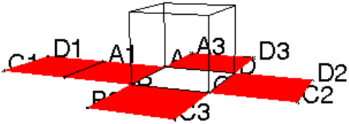
Puis, on tape :
L1:=seq([cubeani(t)],t=0..1.57,0.1):;
L2:=seq([cubeani(t)],t=1.57..0,-0.1):;
animation(L1,L2)
Selon les deltaèdres à construire, on aura besoin de pièces identiques à la pièce élémentaire et aussi de pièces symétriques à la pièce élémentaire.
La pièce élémentaire se fait avec un rectangle de dimension
a× a√3.
On peut obtenir 2 rectanges de cette dimension par pliage :
Prendre un rectangle ABCD de dimension a× a√3.
Voilà comment on procède :


Les triangles situés à chaque bout seront appelés : languettes et
les triangles du centre seront appelés : pochettes.
Pour construire, on met les languettes dans les pochettes.
Prendre un rectangle ABCD de dimension a× a√3.
On améne B en D pour former le pli g1g2 symétrique de G1G2 par
rapport à la médiatrice de AB, puis on continue comme
précédemment...

Pour construire :
Refaire les opérations de pliage et montrer qu’une pièce élémentaire est constituée de 4 triangles équilatéraux (le pli G1G2 est la médiatrice de AC et ABC étant la moitié d’un triangle équilatéral, G2 est le centre de gravité de ce triangle équilatéral etc...).
On veut construire le rhomboèdre AB,AD,AF
On construit un rhomboèdre dont les faces sont des losanges de côtés de
longueur l et ayant un angle égal à a avec 0≤ a≤ 2π/3.
Pour faciliter les calculs, on choisit tout d’abord le point A sur l’axe des z et on suppose que 3 losanges ABCD,ADEF,AFGB sont issus
du sommet A, l’angle A de ces 3 losanges valant a et que B,D,E sont
dans le plan Oxy avec B sur l’axe des x.
On tape:
rhomboedre0(l,a):={
local d,r,h,A,B,C,D,E,F,G;
d:=2*l*sin(a/2);
r:=d/sqrt(3);
h:=sqrt(l*l-r*r);
A:=point(0,0,h);
B:=point(r,0,0);
D:=point(-r/2,r*sqrt(3)/2,0);
F:=point(-r/2,-r*sqrt(3)/2,0);
C:=point(r/2,r*sqrt(3)/2,-h);
E:=point(r/2,-r*sqrt(3)/2,-h);
G:=point(-r/2,0,-h);
retourne parallelepipede(A,B,D,F);
}:;
On peut prendre un autre point de vue. pour faire le rhomboèdre
AB,AC,AD, on choisit A à l’origine, B sur l’axe des x (AB=l), C
dans le plan ABM et l’angle AB,AC=a.
On tape :
rhomboedre1(A,l,M,a):={
local B,C,D,E;
B:=point(l,0,0);
losange(A,B,[M,a],C,D);
E:=point(l*cos(a)*tan(a/2),l*cos(a),l*tan(a/2));
retourne parallelepipede(A,B,C,E);
}:;
On fait maintenant un changement de repère, pour que A et B
soient quelconques.
changrep(A,B,M) renvoie la matrice de passage du repère (O,i,j,k)
au repère A,I,J,K avec :
AI=AB/AB,
AK=(AI∧AM)/|AI
wedgeAM|,
AJ=(AK∧
overrightarrowAI)
On tape:
changrep(A,B,M):={
local V,nV,W,nW,I,J,K;
V:=B-A;
nV:=sqrt(V*V);
I:=A+V/nV;
W:=cross(B-A,M-A);
nW:=sqrt(W*W);
K:=A+W/nW;
J:=A+cross(W/nW,V/nV);
retourne normal([coordonnees(I),coordonnees(J),coordonnees(K)]);
}:;
On tape :
rhomboedre(A,B,M,a):={
local l,C,D,E,P;
P:=changrep(A,B,M);
l:=longueur(A,B);
M1:=A+tran(P)*coordonnees(M);
retourne rhomboedre1(A,l,M1,a);
}:;
Construire avec du carton un rhomboèdre : chaque groupe de 6 élèves
choisit de faire un rhomboèdre à partir d’un losange donné par son angle
aigu (le même losange peut donner lieu à la construction de 2
rhomboèdres).
Faire faire ensuite le dessin dans Xcas en prenant comme paramètre un
angle du losange (on pourra suggérer de choisir la représentation de
rhomboedre0).
Pour tracer facilement le dodécaèdre rhombique en perspective cavalière,
il faut tout d’abord tracer un cube de centre O, puis tracer les 6
symétriques S0j de O par rapport au centre Oj des faces
du cube (j=1..6).
On joint SOj aux quatre sommets de la face du cube de centre Oj
(j=1..6).
Le dodécaèdre rhombique est le solide qui a 12
faces en forme de losanges et 14 sommets qui sont les 8 sommets du cube et les
6 symétriques S0j de O par rapport au centre Oj des faces du cube
(j=1..6).
Le dodécaèdre rhombique est un polyèdre ayant 12 faces et 14 sommets.
Chaque face est ègale à un même losange.
Le dodécaèdre rhombique a 6 sommets d’ordre 4 (sommet commun á 4
losanges) et 8 sommets d’ordre 3 (sommet commun á 3 losanges).
Pour se faire une idèe de sa forme, avec 8 losanges égaux de forme
quelconque, on construit deux "pointes" en accolant 4 losanges. Si S et SS
sont les sommets (d’ordre 4) de ces deux pointes, on ammène ensuite en
coincidence les sommets opposés à S et SS.
On obtient un polyèdre ayant 8 faces pleines et 4 faces vides qui peuvent
être comblés par 4 losanges qui sont à priori différents des losanges
initiaux. Mais pour le dodécaèdre rhombique ces losanges doivent être
égaux aux losanges initiaux. Il faut donc trouver les dimensions d’une face.
Détermination des dimensions d’une face :
On suppose qu’une face est un losange de côté l et d’angle aigu a.
Montrons que tan(a)=2√2.
Considérons la pointe de sommet S qui accolle 4 losanges.
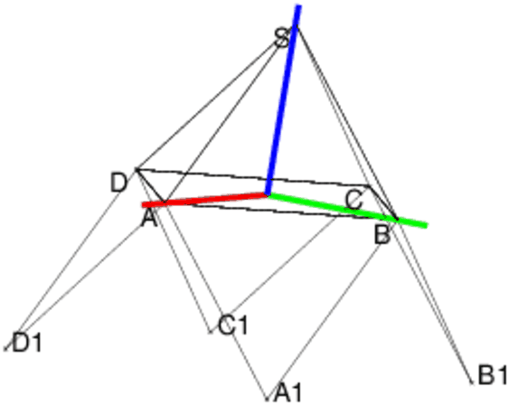
Elle est constituée par les 4 losanges
SAA−1B, SBB1C, SCC1D, SDD1A où SABCD est une pyramide de hauteur
h et de base carrée ABCD ((AC/2)2=l2−h2 et AB=AC/√2) et
où A1 est le symétrique de S par rapport au
milieu de AB, B1 est le symétrique de S par rapport au
milieu de BC etc...
On a : A1BB1=ASC
On veut avoir : A1BB1=π−a
Dans le triangle SAB avec le théorème d’Al-Kashi on a :
AB2=SA2+SB2−2SA*SBcos(ASB)=2l2−2l2cos(a)
Dans le triangle SAC avec le théorème d’Al-Kashi on a :
AC2=SA2+SC2−2SA*SCcos(ASC)=2l2+2l2cos(a)
Donc :
AC2+AB2=2l2+2l2cos(a)+2l2−2l2cos(a)=4l2
Or AC2=AB2+BC2=2AB2=4(l2−h2)
Donc :
AC2+AB2=4l2=4l2−4h2+2l2−2h2
Soit :
l2=3h2, AC2=4l2−4h2=4l2(1−1/3)=8l2/3, AB2=AC2/2=4l2/3
D’où sin(a/2)=AB/(2l)=1/√3 et cos(a/2)=√2/√3.
Puisque 4l2/3=AB2=2l2−2l2cos(a), on a :
cos(a)=1−AB2/(2l2)=1−2/3=1/3 sin(a)=√22/3 et donc
| tan(a)=2 | √ |
|
Pour avoir une valeur de a en radians, on tape :
evalf(atan(2*sqrt(2))
On obtient : 1.23095941734 radians
Pour avoir une valeur de a en degrés, on tape :
evalf(atan(2*sqrt(2))*180/pi)
On obtient : 70.5287793655 degrés.
On tape pour faire le dessin d’une "pointe" :
dodecarhomb():={
S:=point(0,0,1/sqrt(3));
A:=point(sqrt(2/3),0,0);
B:=point(0,sqrt(2/3),0);
C:=point(-sqrt(2/3),0,0);
D:=point(0,-sqrt(2/3),0);
polyedre(S,A,B,C,D);
A1:=symetrie(milieu(A,B),S);
B1:=symetrie(milieu(B,C),S);
C1:=symetrie(milieu(C,D),S);
D1:=symetrie(milieu(D,A),S);
polygone(A,A1,B,B1,C,C1,D,D1,A);
}:;
On tape pour faire le dessin du dodécaèdre rhombique :
dodecarhomb():={
S:=point(0,0,1/sqrt(3));
A:=point(sqrt(2/3),0,0);
B:=point(0,sqrt(2/3),0);
C:=point(-sqrt(2/3),0,0);
D:=point(0,-sqrt(2/3),0);
polyedre(S,A,B,C,D);
A1:=symetrie(milieu(A,B),S);
B1:=symetrie(milieu(B,C),S);
C1:=symetrie(milieu(C,D),S);
D1:=symetrie(milieu(D,A),S);
polygone(A,A1,B,B1,C,C1,D,D1,A);
SS:=point(0,0,-3/sqrt(3));
AA:=point(sqrt(2/3),0,-2/sqrt(3));
BB:=point(0,sqrt(2/3),-2/sqrt(3));
CC:=point(-sqrt(2/3),0,-2/sqrt(3));
DD:=point(0,-sqrt(2/3),-2/sqrt(3));
polyedre(SS,AA,BB,CC,DD);
polygone(AA,A1,BB,B1,CC,C1,DD,D1,AA);
}:;
On obtient en cachant les faces :
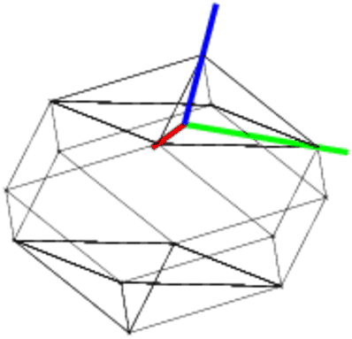
Trouver les dimensions du losange qui sera les faces du
dodécaèdre rhombique.
Faire la construction d’un tel losange et construire le polyèdre avec du
carton puisavec Xcas.
On tape :
L:=[0,5,5+5*i,5*i,1+i,3+i,3+3*i,1+3*i,2+2*i,4+2*i,
4+4*i,2+4*i,2+3*i,3+2*i]];
affichage(point(L[k])$(k=0..13),1+point_point+ epaisseur_point_3);
carre(L[0],L[1]);
carre(L[4],L[5]);
carre(L[8],L[9]);
segment(L[0],L[8]);
segment(L[1],L[5]);
segment(L[1],L[9]);
segment(L[2],L[6]);
segment(L[3],L[11]);
segment(L[3],L[7]);
On obtient :
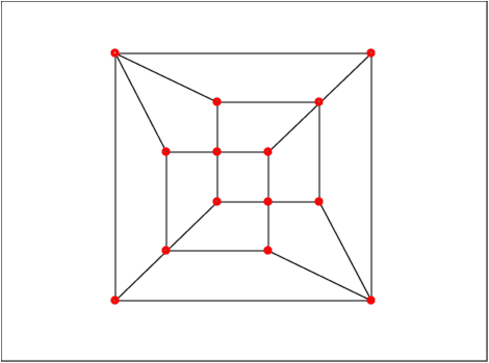
Le squelette ou le graphe de ce dodécaèdre rhombique n’est pas hamiltonien
i.e. il n’existe pas de chemin qui en empruntant les arêtes, passe une fois
et une seule par chaque sommet. En effet chaque sommet d’ordre 4 n’est relié
qu’à des sommets d’ordre 3 et chaque sommet d’ordre 3 n’est relié
qu’à des sommets d’ordre 4. Donc le chemin ne peut passer qu’en alternant
sommet d’ordre 3, sommet d’ordre 4, sommet d’ordre 3 etc...Comme il y a 6
sommets d’ordre 4 et 8 sommets d’ordre 3, un chemin passant une fois
et une seule par chaque sommet n’existe pas.
La formule de Descartes dit un polyèdre convexe qui a F faces polygomales, A arêtes, S sommets alors F+S−A=2 (ici on a 12 faces 14 sommets et
24 arêtes et on a bien 12+14-24=2).
En effet on suppose que ce polyèdre est inscrit dans une sphère sinon on
le déforme pour que ce soit le cas. En rajoutant 1 sommet on obtient N−1
faces supplémentaires, 1 sommet supplémentaires et N arêtes
supplémentaires donc F+S−A=cste. Pour un tétraèdre on a 4 faces,
4 sommet et 6 arêtes donc cste=2
losange_dode(A,B):={
local C,D,l,a;
a:=atan(2*sqrt(2));
D:=rotation(A,a,B);
C:=D+(B-A);
retourne quadrilatere(A,B,C,D);
}:;
patron_dode(A,B):={
local C,D,E,F,G,L,a,b,los;
a:=atan(2*sqrt(2));
b:=pi-a;
D:=rotation(A,a,B);
C:=D+(B-A);
los:=quadrilatere(A,B,C,D);
E:=rotation(C,a,A);
F:=rotation(C,a,B);
G:=rotation(F,pi-3*a,C);
L:=los,rotation(A,-atan(2*sqrt(2)),los),rotation(C,atan(2*sqrt(2)),los),losange_dode(E,E+(B-A));
retourne G,[L];
}:;
patron_dodeca(A,B):={
local C,D,E,F,G,L,L1,L2,a,los;
a:=atan(2*sqrt(2));
F,L:=patron_dode(A,B);
G,L1:= patron_dode(F,F+(B-A));
L2:= patron_dode(G,G+(B-A))[1];
L:==op(L),op(L1),op(L2)
retourne L;
}:;
On tape :
a:=atan(2*sqrt(2));patron_dodeca(point(0),point(exp(-i*a/2)))
On obtient :
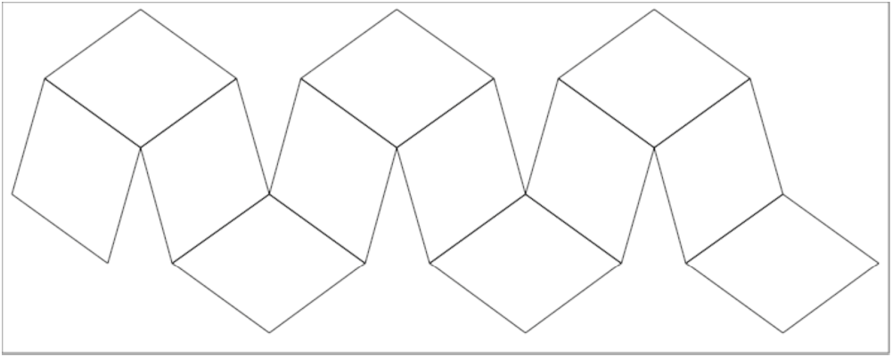
On peut aussi faire tracer ce patron par la tortue : avec la tortue il faut
travailler en degrés.
On tape :
evalf(atan(2*sqrt(2))*180/pi);
On obtient la valeur approchée de a en degrés :
70.5287793655 soit
70o31.72676193′, soit 70o31′43.6057158"
On tape :
los(l,a):={
repete(2,avance(l),tourne_gauche(a),avance(l),
tourne_gauche(180-a));
}:;
loss(l,a):={
repete( 3,los(l,180-a),tourne_gauche(180-a));
tourne_droite(180-3*a);avance(l);tourne_gauche(180-2*a);
los(l,a);avance(l);tourne_gauche(a);
avance(l);tourne_gauche(180-2*a);
saute(l);tourne_droite(-3*a);
}:;
patron(l):={
local a;
a:=evalf(atan(2*sqrt(2))*180/pi);
tourne_droite(180-3*a/2);
repete(3,loss(l,a));
}:;
On tape :
patron(30)
On obtient :
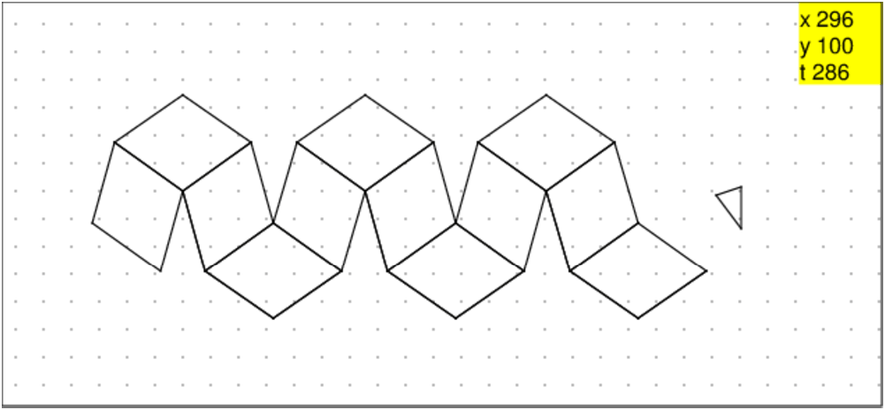
Le triacontaèdre rhombique est un polyèdre qui a 30 faces. Ses faces sont
des losanges d’or (le rapport des diagonales est égal au nombre d’or) de
petit angle atan(2) radians soit environ 63.4349488229 degrés
(≃ 63o 25′) et de grand angle π−atan(2) radians soit environ
116.565051177degrés (≃ 116o 34′).
Étymologie : du grec triaconta "trente" et rhombos "losange" (polyèdre à trente faces en losange).
Il a été étudié par Catalan en 1862.
Il a des 32 sommets (20 sommets de degré 3 i.e. commun à 3 losanges, 12 sommets de degré 5 i.e. commun à 5 losanges)) et 60 arêtes de
longueur a. Son angle dièdre vaut 4π/5 rad = 144o.
Construction d’un losange ABCD tel que
AB,AD=
atan(2) et AB=√5:
On porte sur AB le point M tel que AM=1 et sur la perpendiculaire en M
à AB, on définit le point N tel que MN=2 et l’angle
AM,AN>0.
Alors l’angle
AM,AN=atan(2).
On finit ensuite la construction du losange ABCD.
Le segment AN a pour longueur √5 donc on peut aussi construire le
losange APQN en portant sur AB le point P tel que AP=AN=√5.
On tape dans un niveau de géométrie 2d :
A:=point(0); B:=point(5); M:=point(1); N:=point(1+2i); losange(A,B,angle(A,M,N),C,D); P:=point(sqrt(5)); losange(A,P,atan(2),Q);
On obtient :
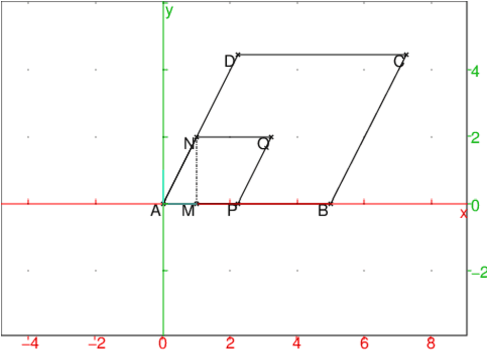
Soit D un sommet de degré 3 du triacontaèdre. Ce sommet est relié à
un triangle équilatèral ABC par les 3 arêtes DA,DB,DC.
On pose a=atan(2). donc
l’angle ADB=π−atan(2)=π−a.
On choisit un repère tel que :
ABC est dans le plan Oxy,
D se projette en O et
A=(1,0,0).
Donc AB=AC=BC=√3
Si l=AD, on a, en considérant le triangle ABD :
AB2=2*l2−2*l2cos(π−a) donc
2*l2+2*l2cos(a)=3
Donc l2=3/2/(1+cos(a))
On tape :
cos(atan(2))
On obtient : (sqrt(5))/5
On tape :
normal(solve(2*x-2*x*cos(pi-atan(2))-3=0))
On obtient : [(-3*sqrt(5)+15)/8]
Donc l2=−3√5+15/8
La hauteur h=DO du tétraèdre DABC vaut donc :
h2=l2−1=7−3√5/8
On cherche à évaluer l’angle des plans ADB et ADC.
On tape dans un niveau de géométrie 3d :
A:=point(1,0,0); B:=point(-1/2,sqrt(3)/2,0); C:=point(-1/2,-sqrt(3)/2,0); a:=atan(2); l2:=normal(3/2/(1+cos(a))); h:=simplify(sqrt(l2-1)); //h:=(3-sqrt(5))/4; D:=point(0,0,h); P:=plan(A,B,D); Q:=plan(A,C,D); angle(P,Q);
On obtient :
acos((-(sqrt(5))-1)/4)
On sait que cos(4π/5)=2*cos(π/5)2−1 et que :
cos(2π/5)=√5−1/4 donc
cos(4π/5)= 3−√5/4−1=−√5−1/4
Donc l’angle dièdre du triacontaèdre est de 4π/5
On tape :
losange_triac(A,B):={
local C,D,l,a;
a:=atan(2);
D:=rotation(A,a,B);
C:=D+(B-A);
retourne quadrilatere(A,B,C,D);
}:;
patron_triac1(A,B):={
local C,D,E,F,a,b,los;
a:=atan(2);
b:=pi-a;
D:=rotation(A,a,B);
C:=D+(B-A);
los:=quadrilatere(A,B,C,D);
los:=los,losange_triac(A,D);
E:=rotation(A,-2*a,D);
los:=los,losange_triac(A,E);
F:=rotation(B,2*a,A);
retourne F,[los];
}:;
patron_triac2(A,B):={
local C,D,E,F,a,b,los;
a:=atan(2);
b:=pi-a;
D:=rotation(A,a,B);
C:=D+(B-A);
los:=quadrilatere(A,B,C,D);
los:=los,losange_triac(A,D);
E:=rotation(A,-2*a,D);
los:=los,losange_triac(A,E);
F:=rotation(D,b,C);
retourne F,[los];
}:;
patron_triaconta(A,B):={
local C,D,E,F,G,l,L1,L2,a,b,j,los;
a:=atan(2.);b:=pi-a;
los:=NULL;
l:=B-A;
pour j de 1 jusque 5 faire
F,L1:=patron_triac1(A,B);
G,L2:= patron_triac2(F,F+l);
los:=los,L1,L2;
A:=G;
B:=A+l;
fpour;
retourne los;
}:;
On tape :
a:=atan(2.);patron_triaconta(point(0),point(exp(-i*a/2)))
On obtient :
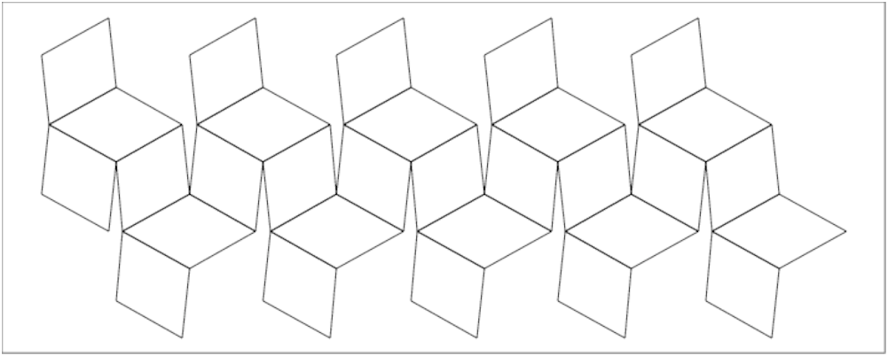
Il faut débuter la construction du triacontaèdre en accolant 5 losanges pour
former une "pointe" ayant pour base un pentagone régulier : c’est la calotte
du dessus. Puis, on rajoute 5 losanges pour combler les vides
(cf dessin). On forme ainsi le début de 5 nouvelles "pointes". Faire
la même chose pour faire la calotte du dessous. Il vous reste alors 10
losanges pour relier les 2 calottes et terminer les amorces des 5 "pointes" du
dessus et les 5 "pointes" du dessous.
En tout, le triacontaèdre a 12 "pointes". Chaque losange appartient à 2
"pointes",le triacontaèdre est donc composé de 12*5/2=30 losanges.
On tape dans un niveau de géométrie 2d pour avoir la vue de dessus d’une
calotte :
losangetria(A,B):=losange(A,B,atan(2));
vuedessus (A,B):={
local C,D,L,j;
L:=NULL;
pour j:=1 jusque 5 faire
L:=L,losange(A,B,2*pi/5,C,D);
L:=L,losange(D,C,4*pi/5);
B:=D;
fpour;
retourne L;
}:;
On tape :
vuedessus(0,-2*i)
On obtient :
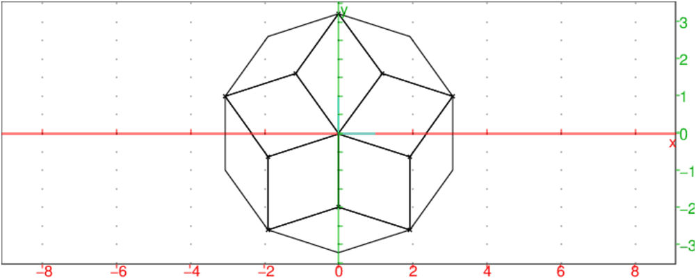
On peut faire le dessin dans l’écran de géométrie 3D.
On prend un losange de côté a√5.
Pour faire le dessin avec Xcas, on doit faire quelques calculs.
On rappelle que :
cos(2π/5)=(√5 −1)/4
cos(2π/5)2=(3−√5)/8
cos(π/5)=(√5 +1)/4
cos(π/5)2=(3+√5)/8
sin(2π/5)2=(5+√5)/8
sin(π/5)2=(5−√5)/8
En effet, 1+2cos(2π/5)+2cos(4π/5)=0 donc
cos(2π/5) est la solution positive de 4X2+2X−1=0.

^2)^2)On tape pour voir les 2 calottes et la tranche du milieu :
S1:=point(0,0,5.5):;S1; S2:=point(0,0,-5.5):;S2; P1:=isopolygone(point([0,0,4.5]),point([2.,0,4.5]),point([0,1.,4.5]),-5):; P1:; P2:=isopolygone(point([0,0,-4.5]),point([2*cos(pi/5.),2*sin(pi/5.),-4.5]), point([0,1.,-4.5]),-5):;P2:; LS1:=sommets(P1):;LS1:=op(LS1),LS1[0]:; LS2:=sommets(P2):;LS2:=op(LS2),LS2[0]:; L1:=losange(S1,LS1[0],LS1[1],C1):; losange(S1,LS1[1],LS1[2],C2):; LL1:=losange(LS1[1],C1,C2,C3):; affichage(rotation(droite(S1,S2),2*k*pi/5,L1)$(k=0..4), 1); affichage(rotation(droite(S1,S2),2*k*pi/5,LL1)$(k=0..4), 1); L2:=losange(S2,LS2[0],LS2[1],D1):; losange(S2,LS2[1],LS2[2],D2):; LL2:=losange(LS2[1],D1,D2):; affichage(rotation(droite(S1,S2),-2*k*pi/5,L2)$(k=0..4), 4); affichage(rotation(droite(S1,S2),-2*k*pi/5,LL2)$(k=0..4), 4); C4:=translation([0,0,-2.],C3):; C5:=translation([0,0,-2.-sqrt(5.)],C3):; C6:=translation([0,0,-2.],C1):; losange(LS1[1],C1,C2,C3):; C7:=translation([0,0,-2.],C2):; LL4:=losange(C4,C5,C7):; LL3:=losange(C4,C6,C5):; affichage(rotation(droite(S1,S2),2*k*pi/5,LL4)$(k=0..4),0); affichage(rotation(droite(S1,S2),2*k*pi/5,LL3)$(k=0..4),0);
On obtient les 2 calottes et la tranche du milieu :
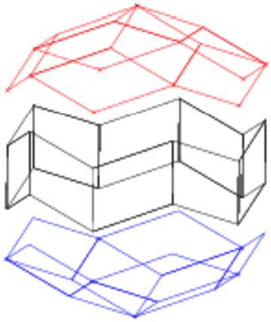
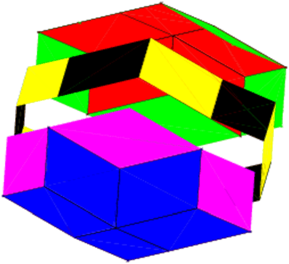
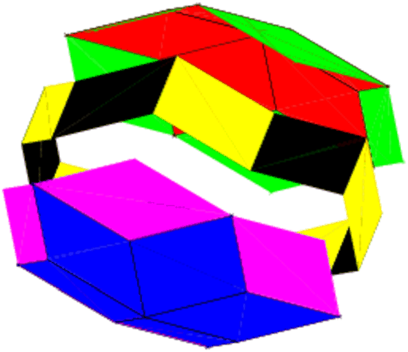
On peut remarquer que si A et B sont des sommets opposés et si PA et
PB sont les plans perpendiculaires à AB passant respectivement par A
et B alors les autres sommets des losanges sont disposés sur des cercles
dont les 6 plans sont perpendiculaires à AB et les 8 plans (ces 6 plans + PA et PB) sont distants
de A de (0,a,2a,3a,a(√5+2),a(√5+3)),a(√5+4),a(√5+5).
C’est à dire que AB=a(5+√5) i.e. les sommets opposés sont distants
de a(5+√5).
Ses différents sommets sont sur des cercles de rayon :
0, 2a, 4acos(π/5), 4acos(π/5), 4acos(π/5), 4acos(π/5), 2a, 0.

Pour faire le triacontaèdre il reste à rassembler
les 2 calottes et la tranche du milieu. Pour cela il suffit de changer les
cotes des objets géométriques afin de rassambler les 3 images ou bien on
taper :
//on est en dimension 2 P1:=isopolygone(point(0),2,-5):; LS1:=op(sommets_abca(P1)):; P2:=isopolygone(point(0),2+2*exp(i*2*pi/5),-5):; LS2:=op(sommets_abca(P2)):; //on passe en dimension 3 LS1:=append(evalf(coordonnees(LS1[k])),0)$(k=0..5); LS2:=append(evalf(coordonnees(LS2[k])),-1)$(k=0..5):; P:=seq(polygone(point(0,0,1),LS1[k],LS2[k],LS1[k+1]) ,k,0,4):; P; C:=NULL:;LS2:=evalf(LS2[4]),LS2:; L:=seq(losange(LS1[k],LS2[k],LS2[k+1],C[k]),k,0,4):;L; D:=(translation([0,0,-sqrt(5)],C[k]))$(k=0..4):; F:=(translation([0,0,-sqrt(5)],point(LS2[k])))$(k=0..4):; polygone(LS2[1],C[0],D[0],F[1]); polygone(point(LS2[k+1]),C[k],D[k],point(F[k+1]))$(k=0..3):; polygone(LS2[1],F[1],D[1],C[1]); polygone(LS2[0],C[4],D[4],F[0]); polygone(LS2[k],F[k],D[k],C[k])$(k=0..4); polygone(LS2[k+1],C[k],D[k],F[k+1])$(k=0..3); LL4:=losange(F[0],D[4],D[0],G4):;G:=NULL:; L4:=(losange(F[k+1],D[k],D[k+1],G[k])$(k=0..3)),LL4:; L4;G:=G4,G:; L5:=losange(D[k],G[k],G[k+1])$(k=0..3); LL5:=losange(D[4],G[4],G[0],AAA):; coordonnees(AAA);L5:=L5,LL5[0]:; affichage(L5[k],1+epaisseur_ligne_2)$(k=0..4);
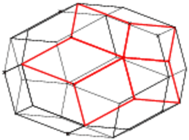
Les coordonnées de AAA sont (0,0,−4−√5). Donc si une pointe a comme
coordonnéees 0,0,1 les coordonnées de la pointe
opposée est [0,0,−4−√5].
Un triacontaèdre de côté √5 a comme hauteur 5+sqrt(5) : la bande
intermédiaire a des sommets sur une verticale de côté √5 mais ces
sommets sont alternativement sur des plans horizontaux distants de 1.
Le triacontaèdre a 30 faces qui sont des losanges d’or, 32 sommets et 30 arêtes.
Exercice (niveau 3-ième)
Le triacontaèdre a 30 faces qui sont des losanges d’or et 32 sommets qui sont
soit d’ordre 3 soit d’ordre 5 (i.e. soit communs à 3 faces, soit communs à
5 faces).
Combien y-a-t-il de sommets d’ordre 3 et de sommets d’ordre 5 ?
Soit x le nombre de sommets d’ordre 3 et y le nombre de sommets d’ordre 5.
On a à résoudre le système :
x+y=32 et 3*x+5y=30*4 qui est équivalent à
x=32−y et 3*32+2y=4*30 soit
x=32−y et y=60−48
Donc x=20 et y=12.
Ou bien avec Xcas, on tape :
linsolve([x+y=32,3x+5y=120],[x,y])
On obtient [20,12]
Le graphe du triacontaèdre
On tape :
LA:==[-6,-4,-2,-1,1,2,4,6,-6i,-4i,-2i,-i,i,2i,4i,6i];
LB:=[3+i,1+2*i,1+3*i,2+3*i,-3+i,-1+2*i,-1+3*i,-2+3*i,
-3-i,-1-2*i,-1-3*i,-2-3*i,3-i,1-2*i,1-3*i,2-3*i];
affichage(point(LA[k]),1+ epaisseur_point_3+point_point)$(k=0..15);
affichage(point(LB[k]),1+ epaisseur_point_3+point_point)$(k=0..15);
polygone(LA[0],LA[8],LA[7],LA[15]);
polygone(LA[1],LA[9],LA[6],LA[14]);
polygone(LA[1],LA[8],LA[6],LA[15]);
polygone(LA[4],LA[5],LB[1],LA[12]);
polygone(LA[3],LA[2],LB[5],LA[12]);
polygone(LA[3],LA[2],LB[9],LA[11]);
polygone(LA[4],LA[5],LB[13],LA[11]);
segment(LB[0],LA[5]) ,segment(LB[12],LA[5]);
segment(LB[4],LA[2]) ,segment(LB[8],LA[2]);
segment(LB[2],LB[3]), segment(LB[2],LB[1]);
segment(LB[2],LA[13]);
segment(LB[6],LB[7]), segment(LB[6],LB[5]);
segment(LB[6],LA[13]);
segment(LB[10],LB[11]), segment(LB[10],LB[9]);
segment(LB[10],LA[10]);
segment(LB[14],LB[15]), segment(LB[14],LB[13]);
segment(LB[14],LA[10]);
segment(LA[0],LA[1]), segment(LA[6],LA[7]);
segment(LA[8],LA[9]), segment(LA[14],LA[15]);
segment(LA[10],LA[11]), segment(LA[12],LA[13]);
On obtient :

Le squelette de ce triacontaèdre n’est pas hamiltonien
i.e. il n’existe pas de chemin qui en empruntant les arêtes, passe une fois
et une seule par chaque sommet. En effet chaque sommet d’ordre 5 n’est relié
qu’à des sommets d’ordre 3 et chaque sommet d’ordre 3 n’est relié
qu’à des sommets d’ordre 5. Donc le chemin ne peut passer qu’en alternant
sommet d’ordre 3, sommet d’ordre 5, sommet d’ordre 3 etc...Comme il y a 12
sommets d’ordre 5 et 20 sommets d’ordre 3, un chemin passant une fois
et une seule par chaque sommet n’existe pas.
Faire faire le patron du losange de base de côté √5 aux èlèves
pour obtenir 30 losanges (c’est parfait pour une classe de 30 élèves !).
Faire le montage avec du scotch pour obtenir le triacontaèdre.
Ou encore faire le patron de 5 losanges accolés pour pouvoir faire facilement
une "pointe". il faut 12 "pointes" : le montage sera plus facile car le
triacontaèdre final aura une epaisseur de 2 feuilles.
Choisir un repère orthonormé et faire calculer les coordonnées de chaque
sommet du triacontaèdre : c’est un bon exercice qui utilise la géométrie
analytique (en particulier, trouver les coordonnées de la somme de 2 vecteurs,
l’utilité du produit scalaire...) et un peu de géométrie pure.
Voici une coupe du triacontaèdre par un plan passant par 2 sommets opposés
et par une "pointe".
On tape :
S:=point(i); A:=point(-2); A1:=point(2*cos(pi/5)); S1:=symetrie(A1,S); segment(A,S); segment(S1,S); d:=parallele(S1,droite(A,S)):; O1:=inter_unique(d,droite(x=0)); segment(S1,O1); longueur(S,O1); S2:=S1-i*sqrt(5); B:=point(-i-4*cos(pi/5)^2); B1:=symetrie(B,A); B2:=B1-i*sqrt(5); S3:=point(-i*(sqrt(5)+4)); droite(milieu(B2,S3),2+milieu(B2,S3))); M:=milieu(B2,S3); N:=point(2-i*(3+sqrt(5))); segment(S1,B2); segment(S2,B1); polygone(S,A,B1,B2,S3,N,S2,S1);
On obtient :
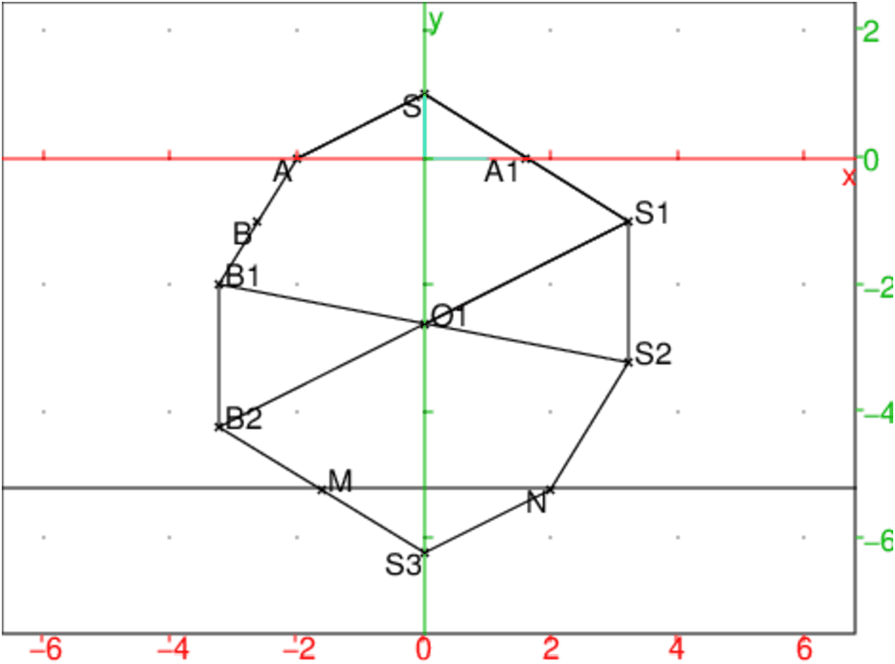
Un exemple d’exercice:
On a dit :
"Il faut débuter la construction du triacontaèdre en accolant 5 losanges
dont un angle vaut atan(2) pour former une "pointe" (la calotte du dessus)
ayant pour base un pentagone régulier.
Puis, on rajoute 5 losanges pour combler les vides.
Pmontrons les vides peuvent être comblés par un losange ayant des
côtés de longueurs √5 et comme angles α=atan(2) et π−α :
On tape :
S:=point(0,0,1);A:=point(2,0,0),B:=point(2*cos(4*pi/5),2*sin(4*pi/5),0)
Alors le produit scalaire de SA.SB vaut :
4cos(4π/5)+1=1−4cos(π/5)=1−(1+√5)=−√5=5*cos(x).
Donc cos(x)=−√5/5. Puisque cos(α)=√5/5 on a
cos(x)=−cos(α).
Donc l’autre angle x du losange vaut x=π−α
Donc le vide peut être comblé par un losange d’angles
α=atan(2) et π−α.
Ce qui suit a été inspiré d’une épreuve à l’oral de l’agrégation
externe de Mathématiques session 2008 dont voila le lien :
http://agreg.dnsalias.org/Textes/pub2008-C2.pdf
Les différentes configurations possibles de chaque molécule formant un
cycle de 6 atomes (comme le cyclohexane et le glucose) sont déterminées par
la longueur de ses liaisons et par les angles que doivent faire entre elles les
différentes liaisons.
Nous étudions ici la forme des molécules du cyclohexane et du glucose.
Nous allons commencer tout d’abord par un lemme utile pour l’étude de ces
2 cas.
Pour étudier la forme de la molécule du cyclohexane, on a besoin de résoudre le système en u,v,w de la forme :
| R(u,v)=0,R(v,w)=0,R(u,w)=0 |
lorsque R(u,v)=α u2v2+β(u2+v2)+γ uv+δ
et
pour étudier la forme de la molécule du glucose, on a besoin de
résoudre le système en u,v,w de la forme :
| P(u,v)=0,R(v,w)=0,R(u,w)=0 |
lorsque P(u,v)=α1 u2v2+β1(u2+v2)+γ1 uv+δ1 et
R(u,w)=α u2w2+β u2+γ uw+η w2+δ.
On commence par chercher à résoudre le système en u,v,w de la forme :
| P(u,v)=0,R(v,w)=0,R(u,w)=0 |
lorsque P(u,v)=α1 u2v2+β1(u2+v2)+γ1 uv+δ1 et
R(u,w)=α u2w2+β u2+γ uw+η w2+δ.
Pour cela on cherche u et v en fonction de w pour que :
R(v,w)=0,R(u,w)=0
On a donc à résoudre tout d’abord l’équation du second degré en w :
R(x,w)=α x2w2+β x2+γ wx+η w2+δ=(α w2+β)x2+γ wx+η w2+δ.
En posant :
a=α w2+β
b=γ w
c=η w2+δ
On a donc à résoudre l’équation du second degré :
R(x,w)=ax2+bx+c=0 où a,b,c dépendent de w.
Cette équation a 2 solutions x1 et x2 qui dépendent de w.
Donc on peut avoir :
u=v=x1 ou u=v=x2 ou u=x1,v=x2 ou u=x2,v=x1
a:=alpha*w^2+beta;
b:=gamma*w;
c:=eta*w^2+delta;
Eq:=normal(alpha1*c^2+beta1*(b^2-2*c*a)+gamma1*c*a+
delta1*a^2);
solve(Eq=0,w);
Cas P, Q et R sont symétriques et ont les mêmes coefficients
On a :
α1=α, β1=β=η, γ1=γ, δ1=δ
Il faut résoudre Eq=0 qui est une équation bicarrée en w, mais dans
ce cas Eq se factorise.
On tape :
a:=alpha*w^2+beta;
b:=gamma*w;
c:=beta*w^2+delta;
Eq:=normal(alpha*c^2+beta*(b^2-2*c*a)+gamma*c*a+
delta*a^2);
On factorise Eq, on tape :
factor(Eq)
On obtient :
(alpha*delta-beta^2+beta*gamma)*
(alpha*w^4+delta+2*w^2*beta+w^2*gamma)
On voit que (alpha*delta-beta^2+beta*gamma) est un facteur de
Eq donc :
^2+beta*gamma)=0 (on verra dans
l’étude qui suit que c’est le cas pour le cyclohexane),
alors le polynôme Eq est identique à 0 et pour toutes les valeurs de
w, si x1 et x2 sont les solutions différentes de
R(w,x)=(α w2+β)x2+(γ w)x+(β w2+δ)=0 alors,^2+beta*gamma)≠ 0^4+(2*beta+gamma)*w^2+delta=0
Cas P est symétrique et Q et R ont les mêmes coefficients
C’est le cas du glucose.
Il n’y a pas de simplification, il faut résoudre Eq=0 et taper :
a:=alpha*w^2+beta;
b:=gamma*w;
c:=eta*w^2+delta;
Eq:=normal(alpha1*c^2+beta1*(b^2-2*c*a)+ gamma1*c*a+
delta1*a^2);
solve(Eq=0,w);
On choisit ici la molécule du cyclohexane constituée de 6 atomes de
carbone et dans la modélisation ci-dessous, on ne prend en compte que les
liaisons entre les atomes constituant le cycle, et non celles avec les atomes
voisins du cycle.
Pour la molécule du cyclohexane la chimie nous impose :
Le triangle ACE est équilatéral et les triangles ABC, CDE, EFA sont
isocèles avec AB=AC=DC=DE=FE=FA=1 unité de longueur et les angles B,
D, F de ces triangles ainsi que les angles FAB,
BCD et DEF sont égaux à 109 degrés.
Donc on a :
l=AC=AE=CE=2cos(π/2−109π/360)=2cos(71π/360).
D’après les chimistes, il y a 2 conformations appelées
"chaise" et "bateau" : les points B,D,F sont d’un même côté du plan
ACE (c’est le "bateau") ou 2 des points B,D,F sont d’un même côté du
plan ACE et l’autre point est de l’autre côté (c’est la "chaise").
L’étude géométrique faite ici est simplifiée car on ne cherche que les
solutions admettant des symétries mais on verra qu’il y beaucoup d’autres
solutions.
On peut commencer par faire un modèle en carton du problème (les traits
marquent les pliures).

et on améne en coincidence :
CDD avec CD en pliant selon BC et EC,
EFF avec EF en pliant selon ED et EA, et
ABB avec AB en pliant selon FA et AC.
Lorsqu’on plie selon AC, le point B se déplace dans le plan médiateur
de AC sur le cercle de centre le milieu H de AC rayon BH=sin(a1)
où a1=BAC.
Lorsque FF est en F pour pouvoir amener DD en D et BB en B, il
faut que BD=BF donc B se trouve dans le plan médiateur de DF sur le
cercle de centre le milieu H1 de FD et de rayon AC√3/2.
Donc quand la molécule est formée, B est à l’intersection du cercle de
centre E et de rayon AC√3/2 du plan médiateur de FD et du cercle
de centre H et de rayon BH=sin(a1) du plan médiateur de AC.
Quand la molécule est formèe, cherchons tout d’abord les solutions lorsque
FD est parallèle à AC i.e. lorsque le plan médiateur de AC et le
plan médiateur de FD sont confondus.
Cela entraine que les angles des plans CDE, EFA avec le plan ACE sont
égaux si on suppose que F et D sont d’un même côté du plan ACE.
En effet les points B, F et D sont soit tous les trois d’un même
côté du plan ACE (c’est la forme "bateau"), soit deux de ces points sont
d’un même côté du plan ACE et le troisième point est de l’autre
côté (c’est la forme "chaise").
Dans la suite, on suppose que F et D sont au dessus du plan ACE lorsque
l’on se place dans le repère orthonormé directe
(A,i,j,k) tel que
i dirige AC et j soit dans le plan
ACE pour que l’ordonnée de E soit positive.
Du fait des symétries, on ne va considérer que les 2 possibilités :
soit B, F et D sont soit tous les trois au dessus du plan ACE,
soit F et D sont au dessus du plan ACE et B est en dessous de ce plan.
 les 2 plans
ACE et BDF sont parallèles et distant de zB=h.
les 2 plans
ACE et BDF sont parallèles et distant de zB=h.a1:=71/360*pi;
l:=2*cos(a1);
h:=sqrt(sin(a1)^2-cos(a1)^2/3);
triangle(point(0,0,0),point(l,0,0),
point(l/2,l*sqrt(3)/2,0),affichage=1);
triangle(point(0,0,0),point(l,0,0),
point(cos(a1),-l*sqrt(3)/6,h));
triangle(point(l,0,0),point(l/2,l*sqrt(3)/2,0),
point(l,l*sqrt(3)/3,h));
triangle(point(0,0,0),point(l/2,l*sqrt(3)/2,0),
point(0,l*sqrt(3)/3,h));
triangle(point(cos(a1),-l*sqrt(3)/6,h),point(l,l*sqrt(3)/3,h),
point(0,l*sqrt(3)/3,h),affichage=4);
On obtient (en rouge le triangle ACE et en bleu le triangle BDF) :
a1:=71/360*pi; l:=2*cos(a1); H:=point(0); H1:=point(2*cos(a1)/sqrt(3),sqrt(sin(a1)^2-cos(a1)^2/3)); CH1:=cercle(H1,l*sqrt(3)/2):;CH1; CH:=cercle(H,sin(a1)):;CH; S:=inter(CH,CH1):; B0:=S[0]; B1:=S[1];On a :

^2*k1-4*k1^3)/(h1^2+4*k1^2),^3-8*h1*k1^2)/(h1^2+4*k1^2)]^2-cos(a1)^2/3);^2-3))*cos(71*pi/180)-^2-3)))/3]^2-3))*cos(71*pi/180)-^2-3)))/3]])b:=109/180*pi;
a1:=normal(pi/2-b/2);
l:=2*cos(a);
h:=sqrt(sin(a1)^2-cos(a1)^2/3);
B1:=point(cos(a),sqrt(3)*(2*cos(49*pi/120)-cos(71*pi/360))/3,
((-2*sqrt(12*sin(71*pi/360)^2-3))*cos(71*pi/180)-
(sqrt(12*sin(71*pi/360)^2-3)))/3):;
triangle(point(0,0,0),point(l,0,0),point(l/2,l*sqrt(3)/2,0),
affichage=1);
triangle(point(0,0,0),point(l,0,0),B1);
triangle(point(l,0,0),point(l/2,l*sqrt(3)/2,0),
point(l,l*sqrt(3)/3,h));
triangle(point(0,0,0),point(l/2,l*sqrt(3)/2,0),
point(0,l*sqrt(3)/3,h));
segment(point(l,l*sqrt(3)/3,h),point(0,l*sqrt(3)/3,h),
affichage=4);
segment(point(l,l*sqrt(3)/3,h),B1,affichage=2);
segment(B1,point(0,l*sqrt(3)/3,h),affichage=2);
On obtient (en rouge le triangle ACE, en bleu le segment FD et en vert les
segments DB et FB) :
Voilà ce qu suggère le texte de l’épreuve de modélisation de
l’agrégation pour trouver les coordonnées de B, D et F.
On se place dans le repère orthonormé directe
(A,i,j,k) tel que
i dirige AC et j soit dans le plan
ACE (ordonnée de E est positive).
Comme B se déplace sur le cercle de centre H (milieu de AC) et de rayon
BH dans le plan x=AC/2, on peut paramétrer ce cercle sous la forme :
x=AC/2,y=BH1−u2/1+u2,z=BH2u/1+u2
(u=tan(t/2) lorsque t est l’angle du plan ABC avec le plan ACE).
On a ABC est isocèle de sommet B et l’angle A de ce triangle a comme
mesure en radians : a1=π/2−109*π/360=71π/360
Si AB=1 on a AC/2=cos(a1) et BH=sin(a1) donc les coordonnées de B
sont :
x=cos(a1)/2,y=sin(a1)1−u2/1+u2,z=sin(a1)2u/1+u2.
Pour avoir les coordonnées de F en fonction de v, il suffit d’écrire
les coordonnées de F en imaginant AC et AE superposés, puis de faire
une rotation appropriée.
Ici, F est l’image du point SB symétrique de B
par rapport à AC (de paramètre v) par une rotation d’axe
Ak d’angle a=π/3.
Pour avoir les coordonnèes de D, on dit que D est l’image de SB (de
paramètre w) par la rotation de centre Ck et d’angle
−π/3.
On évalue sa1=sin(a1), ca1=cos(a1) et cb=cos(π−2a1)
en fonction de :
t=tan(a1/2)=tan(71π/720)
On a:
a1=71π/360
t=tan(a1/2)
sa1=sin(71π/360)=2t/(1+t2)
ca1=cos(71π/360)=(1−t2)/(1+t2)
cb:=cos(109π/180)=cos(π−2a1)=−(2ca12−1)
a1=71π/360.
On tape :
//t:=tan(71*pi/720);
a:=pi/3;
ca1:=(1-t^2)/(1+t^2); sa1:=2*t/(1+t^2);
cb:=-(2*ca1^2-1);
cA:=coordinates(point(0,0,0));
cC:=coordinates(point(2*ca1,0,0));
cB:=normal(coordinates(point(ca1,sa1*(1-u^2)/(1+u^2),
sa1*2*u/(1+u^2))));
cE:=normal(coordinates(point(ca1,ca1*sqrt(3),0)));
cF:=normal(coordinates(rotation(line(x=0,y=0),a,
point(ca1,-sa1*(1-v^2)/(1+v^2),sa1*2*v/(1+v^2)))));
cD:=normal(coordinates(rotation(line(x=2*ca1,y=0),-a,
point(ca1,-sa1*(1-w^2)/(1+w^2),sa1*2*w/(1+w^2)))));
P:=numer(cB*cF-cb);
Q:=numer((cD-cE)*(cF-cE)-cb);
R:=numer((cB-cC)*(cD-cC)-cb);
On tape :
P:=normal(P)
Q:=normal(Q)
R:=normal(R)
On obtient pour R :
3/2*t^4*u^2*w^2+3/2*t^4*u^2+3/2*t^4*w^2+ 3/2*t^4+2*sqrt(3)*t^3*u^2*w^2+(-2*sqrt(3))*t^3- 9*t^2*u^2*w^2-5*t^2*u^2+16*t^2*u*w-5*t^2*w^2- 9*t^2+(-2*sqrt(3))*t*u^2*w^2+2*sqrt(3)*t+ 3/2*u^2*w^2+3/2*u^2+3/2*w^2+3/2
On sait qu’en raison des symétries de la configuration les conditions
P=0,Q=0,R=0 peuvent s’exprimer en fonction de R.
Pour le vérifier, on tape :
simplify(R-subst(P,v,w))
On obtient : 0
et on tape :
simplify(R-subst(Q,v,u))
On obtient : 0
On définit les coefficients α, β, γ, δ, pour
que :
R=α u2w2+β(u2+w2)+γ uw+δ
On tape :
LC:=coeffs(R,u) alpha,x,beta:=coeffs(LC[0],w); gamma,x:=coeffs(LC[1],w); beta,x,delta:=coeffs(LC[2],w); purge(x);
Pour avoir une valeur approchée de R, on tape :
a1:=71*pi/360.;t:=tan(a1/2);
normal(R)
On obtient :
-0.803377348547*u^2*w^2+2.00684135654*u^2+3.27890002175*u*w+ 2.00684135654*w^2+3.17761005070
On cherche les solutions approchées telles que u=v.
On tape pour avoir les solutions telles que u=w :
purge(t,a1);
S1:=solve(subst(P,v,u)=0,u)
t:=tan(71*pi/720);
On obtient :
[(sqrt(-9*t^4+30*t^2-9))/(3*t^2+(-2*sqrt(3))*t-3), -(sqrt(-9*t^4+30*t^2-9))/(3*t^2+(-2*sqrt(3))*t-3), (sqrt(-t^4+14*t^2-1))/(t^2+2*sqrt(3)*t-1), -(sqrt(-t^4+14*t^2-1))/(t^2+2*sqrt(3)*t-1)]
On tape
t:=tan(71*pi/720)
evalf(S1)
On obtient :
[-0.645454288199*i,0.645454288199*i,
3.08123639142,-3.08123639142]
On tape pour avoir les solutions u,v,w telles que u=v=3.08123639142 :
solve(subst(R,u,3.08123639142)=0,w)
On obtient 2 valeurs de w:
[-1.28367770808,3.08123639141]
Donc les solutions qui vérifient u=w sont :
u,v,w=3.08123639141,3.08123639141,3.08123639141
u,v,w=3.08123639141,3.08123639141,−1.28367770808
ainsi que les solutions symétriques :
u,v,w=3.08123639141,−1.28367770808,3.08123639141
u,v,w=−1.28367770808,3.08123639141,3.08123639141
ainsi que les solutions opposées :
u,v,w=−3.08123639141,−3.08123639141,−3.08123639141
u,v,w=−3.08123639141,−3.08123639141,1.28367770808
u,v,w=−3.08123639141,1.28367770808,−3.08123639141
u,v,w=1.28367770808,−3.08123639141,−3.08123639141
On cherche les solutions approchées telles que u≠ v.
On tape :
normal(beta^2-beta*gamma-alpha*delta)
On obtient : 0
Donc lorsque l’on fixe w les solutions différentes u1,u2 (dépendant
de w) de l’équation en u R=0 sont solution de :
subst(subst(P,u,u1),v,u2)=0.
On tape :
S2:=normal(evalf(solve(R=0,u)))
On obtient :
[(1.63945001088*w-sqrt(d))/(0.803377348547*w^2-2.00684135654),
(1.63945001088*w+sqrt(d))/(0.803377348547*w^2-2.00684135654)]
avec :
d:=1.61225088797*w^4+1.21320404513*w^2-6.37695926481
On cherche le signe de d, on tape :
factor(d)
On obtient :
1.61225088797*(w-1.28367770808)*(w+1.28367770808)* (w^2+2.40031931071)}
Donc d≥ 0 si w≥ 1.28367770808 ou si w≤ −1.28367770808.
On a alors des solutions
réelles u,v qui sont x1,x2 les solutions de solve(R=0,u) :
1.63945001088*w−√d/0.803377348547*w2−2.00684135654, 1.63945001088*w+√d/0.803377348547*w2−2.00684135654
avec d=1.61225088797*w4+1.21320404513*w2−6.37695926481
et si w=1.28367770808 ou si w=−1.28367770808 on a d=0 donc u=v et on
retouve une des solutions trouvées précédemment à savoir :
u,v,w=3.08123639148, 3.08123639148,−1.28367770808 et
u,v,w=−3.08123639148, −3.08123639148,1.28367770808.
On remarque que si w2>1.283677708082=1.6478284582 alors les solutions de
l’équation en u R=0, seront de même signe si :
normal(subst(R,u,0))=2.00684135654*w^2+3.17761005075
est de même signe que :
normal(coeffs(R,u)[0]) =-0.803377348547*w^2+2.00684135654
c’est à dire si −0.803377348547*w2+2.00684135654>0
c’est à dire si w2<2.49800589993.
On a √2.49800589993=1.58050811448 donc :
Les solutions u,v qui dépendent de w sont de même signe négatif si :
−1.58050811448<w<−1.28367770808 ou 1.28367770808<w<1.58050811448.
et sinon sont de signe opposé.
Des exemples de solutions
On tape :
d(w):=1.61225088797*w^4+1.21320404513*w^2-6.37695926481
u(w):=(1.63945001088*w-sqrt(d(w)))/(0.803377348547*w^2-2.00684135654)
v(w):=(1.63945001088*w+sqrt(d(w)))/(0.803377348547*w^2-2.00684135654)
u(1.5),v(1.5),1.5
On obtient :
-1.67823888288,-23.0070286629,1.5
On tape :
u(2),v(2),2
On obtient :
-1.36553633921,6.80017108457,2
On tape :
u(3),v(3),3
On obtient :
-1.28387158972,3.16701448356,3
On tape :
u(30),v(30),30
On obtient :
-1.51735311476,1.65377825995,30
Lorsque w tend vers l’infini (ce qui correspond à un angle plat entre le
plan ACE et le plan CDE on tape :
On tape :
purge(w)
limit(u(w),w=inf)
On obtient :
-1.58050811448
On tape :
limit(v(w),w=inf)
On obtient :
1.58050811448
Remarque
si w=3.08123639148 alors √d=12.266363249, on trouve alors
u=−1.28367770808 et v=3.08123639148 car si w> 1.28367770808 ou
si w<−1.28367770808, u et v seront différents.
Pour retrouver la solution u=v=w et faudrait résoudre les équations en
w :
subst(subst(P,u,x1),v,x1)=0 et subst(subst(P,u,x2),v,x2)=0
Mais il est plus simple de résoudre directement l’équation en
u :
subst(P,v,u)=0 qui a 4 solutions uj (j=1..4) puis de résoudre pour
chaque solution l’équation en w :
subst(R,u,uj)=0.
On tape :
purge(t); P:=3/2*t^4*u^2*v^2+3/2*t^4*u^2+3/2*t^4*v^2+ 3/2*t^4+2*sqrt(3)*t^3*u^2*v^2+(-2*sqrt(3))*t^3- 9*t^2*u^2*v^2-5*t^2*u^2+16*t^2*u*v-5*t^2*v^2- 9*t^2+(-2*sqrt(3))*t*u^2*v^2+2*sqrt(3)*t+ 3/2*u^2*v^2+3/2*u^2+3/2*v^2+3/2; Q:=3/2*t^4*v^2*w^2+3/2*t^4*v^2+3/2*t^4*w^2+ 3/2*t^4+2*sqrt(3)*t^3*v^2*w^2+(-2*sqrt(3))*t^3- 9*t^2*v^2*w^2-5*t^2*v^2+16*t^2*v*w-5*t^2*w^2- 9*t^2+(-2*sqrt(3))*t*v^2*w^2+2*sqrt(3)*t+ 3/2*v^2*w^2+3/2*v^2+3/2*w^2+3/2; R:=3/2*t^4*u^2*w^2+3/2*t^4*u^2+3/2*t^4*w^2+ 3/2*t^4+2*sqrt(3)*t^3*u^2*w^2+(-2*sqrt(3))*t^3- 9*t^2*u^2*w^2-5*t^2*u^2+16*t^2*u*w-5*t^2*w^2- 9*t^2+(-2*sqrt(3))*t*u^2*w^2+2*sqrt(3)*t+ 3/2*u^2*w^2+3/2*u^2+3/2*w^2+3/2
On tape pour éliminer w des équations Q=0,R=0 :
RQ:=resultant(Q,R,w)
On factorise RQ, on tape :
fRQ:=factor(RQ)
On obtient :
1024*t^4*(t-(sqrt(3)))*(t+(sqrt(3))/3)*(t+sqrt(3))*(3*t-(sqrt(3)))*(v-u)^2*fRQ[8]
On trouve u=v ou fRQ[8]=0
On tape pour éliminer v des équations P=0,fRQ[8]=0 :
PfRQ:=resultant(P,fRQ[8],v)
On obtient :
0
On tape :
normal(2*P-fRQ[8])
On obtient :
0
donc 2P et fRQ[8] sont les mêmes polynômes.
On sait qu’il existe U et V tel que :
U*Q+V*R=RQ (on a :U,V:=abcuv(Q,R,RQ,w))
On a montré que :
RQ=U*Q+V*R=k*(u−v)*P où k est une constante.
On fixe w.
Si u et v vérifient Q=0 et R=0 alors (u−v)*P=0 c’est à dire:
si u et v vérifient Q=0 et R=0 alors soit u=v soit P=0.
Donc on retrouve les solutions :
(u,v=u,w lorsque u=uj avec uj solution de solve(subst(P,v,u))=0,u)
et w=wk avec wk solution de solve(subst(R,u,uj))=0,w) et
u,v≠ u,w lorsque u et v sont les solutions différentes dépendant
de w de solve(R=0,u)
Il reste a regarder quand ces solutions sont réelles.
On choisit ici la molécule de glucose qui est constituée de 6 atomes (un
atome d’oxygène et 5 atomes de carbone) et dans la modélisation ci-dessous,
nous ne prenons en compte que les liaisons entre les atomes constituant le
cycle, et non celles avec les atomes voisins du cycle.
Pour la molécule de glucose la chimie nous impose :

L1=AB=AF=1.43 Angström,
L2=BC=CD=DE=EF=1.54 Angström
t1=BAF=106*π/180 radians
t2=ABC=BCD=CDE=DEF=EFA=109*π/180 radians
On calcule :
l1=AC=AE=√AB2+BC2−2AB*BC*cos(109π/180)
l1=√L12+L22−2L1L2cos(t2)
l2=CE=√2CD2−2CD2*cos(109π/180)=√2L22−2L22cos(t2)
l3=AH=√l12−l22/4) (où H est le milieu de CE)
l4=FB=√2L12−2L12cos(t1) (l4 est le troisième côté
du triangle isocèle d’angle 106 degrés et de côtés 1.43).
h4=DJ=√l22−l42/4 (où J est le milieu de BF)
On pose :
c0=DCEπ/2−t2/2=71*π/360.
c1=ECA
c2=ACB
a3=CAB
cc1=cos(c1)=l2/(2l1)
sc1=sin(c1)=l3/l1
sc2=sin(c2)=L1*sin(t2)/l1
cc2=cos(c2)=(l12+L22−L12)/(2*l1*L2)=(L2−L1*cos(t2))/l1;
sa3=sin(a3)=L2*sin(t2)/l1
ca3=cos(a3)=(L12+l12−L22)/(2*L1*l1)=(L1−L2*cos(t2)/l1
On tape pour un calcul approché de AC et AE :
l1:=sqrt(1.43^2+1.54^2-2*1.43*1.54*cos(109*pi/180))
On obtient : AC=AE==2.4187667063
On tape pour un calcul approché de CE :
l2:=sqrt(2*1.54^2-2*1.54^2*cos(109*pi/180));
On obtient : 2.50747579654
On tape pour un calcul approché de AH :
l3:=sqrt(l1^2-l2^2/4);
On obtient : 2.50747579654
On tape pour un calcul approché de l4=FB (lorsque la molécule est
formée):
l4:=sqrt(2*1.43^2-2*1.43^2*cos(106*pi/180));
On obtient : 2.28409755874
Le modéle en carton
On peut commencer par faire un modéle en carton du problème : parmi les
triangles qui bordent ACE il y a 3 triangles isocèles (CBDD, CDE et
EDFF) d’angle 109 degrés et de côtés 5 cm, 1 triangle isocèle
(AFBB) d’angle 106 degrés et de côtés 5*1.43/1.54 cm≃ 4.64 cm
et 2 triangles (ABC et AFE) de cotés 5 cm et 4.64 cm et d’angle
109 degrés.
Le modéle :
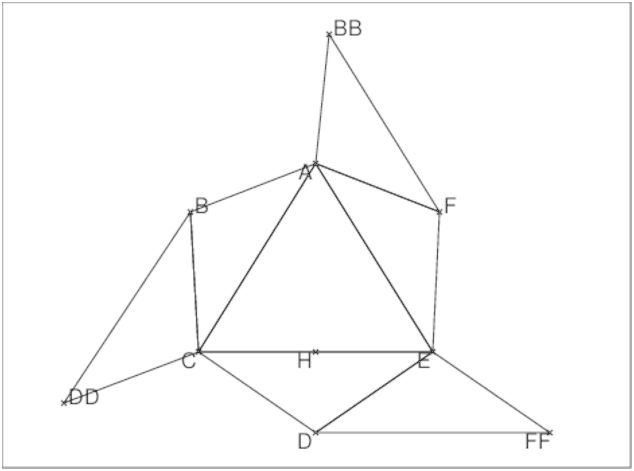
Puis, on forme la molécule en amenant en coincidence :
CDD avec CD en pliant selon BC et EC, EFF avec EF en pliant selon
ED et EA, et ABB avec AB en pliant selon FA et AC.
Les solutions symétriques en géométrie
Pour privilégier, la sym’etrie par rapport à la médiatrice de CE, il
semble plus judicieux de se placer dans le repère orthonormé direct :
C,i,j,k tel que
i dirige CE, j dirige
HA où H est le milieu de CE.
Voici les notations :

On tape :
L1:=1.43;L2:=1.54; t1:=106*pi/180.; t2:=109*pi/180.; c0:=71*pi/360.; l1:=sqrt(normal(L1^2+L2^2-2*L1*L2*cos(t2))); l2:=sqrt(normal(2*L2^2-2*L2^2*cos(t2))); l3:=sqrt(normal(l1^2-l2^2/4)); l4:=sqrt(normal(2*L1^2-2*L1^2*cos(t1))); h4:=sqrt(normal(l2^2-l4^2/4)); sc1:=sin(c1); cc1:=cos(c1); sc2:=sin(c2); cc2:=cos(c2); sa3:=sin(a3); ca3:=cos(a3);
Le but est de calculer x0,y0,z0 les coordonnées de B lorsque la
molécule est formée de façon à ce que B et D soient symétriques
par rapport au plan médiateur de CF et on suppose z0>0.
Pour cela nous projetons la molécule de glucose 3d symétrique sur le plan
ACE et sur le plan médiateur de CE.
Faisons maintenant une projection sur le plan ACE

B se projette en N sur AC et on a AN=L1cos(a3)
B se projette en Bp sur le plan ACE et BpN est perpendiculaire
à AC (c’est le théorème des 3 perpendiculaires)
Bp se projette en Mp sur la médiatrice de CE et on a BpMp=l4/2.
Si K est l’intersection de BpN et de la médiatrice de CE, on a :
AN/AK=sin(c1) et AN=L1cos(a3) donc
AK=L1cos(a3)/sin(c1)
BpMp/KMp=tan(c1) donc KMp=l4/(2tan(c1))=l4*cos(c1)/(2*sin(c1)) et
AMp=AK−KMp=L1cos(a3)/sin(c1)−l4*cos(c1)/(2*sin(c1))
Donc Bp a pour coordonnées :
x0=l2/2−l4/2, y0= l3−L1cos(a3)/sin(c1)+l4/(2tan(c1)).
Avec les notations que l’on a choisies on tape :
Bp:=point(l2/2-l4/2,l3-L1*ca3/sc1+l4*cc1/(2*sc1))
Cherchons la cote z0 de B.
On sait que:
B se projette en N sur AC
AB=L1
BN=L1sin(a3) donc
z02=AB2−ABp2=L12−l42/4−AMp2=
z02=L12−l42/4−(L1cos(a3)/sin(c1)+l4cos(c1)/(2sin(c1)))2
Avec les notations que l’on a choisies on tape :
z0:=normal(sqrt(L1^2-longueur2(A,Bp)));
Donc B a pour coordonnées x0,y0,z0 soit :
0.111689118901, 1.42546684563, 0.571987598417
et F a pour coordonnées x0+l4,y0,z0:
2.39578667764, 1.42546684563, 0.571987598417
Faisons maintenant une coupe selon le plan médiateur de CE
Soit M la projection de B sur le plan médiateur de CE
Lorsque la molécule symétrique est formée, le point D se trouve dans ce
plan médiateur sur le cercle de centre H et de rayon L2sin(c0).
Le triangle BDF est un triangle isocèle de côtés l4,l2,l2 et de
hauteur :
h4=√l22−l42/4 donc
D est aussi sur le cercle de centre M et de rayon h4.
On fait la figure dans le plan médiateur avec comme repère Hyz.
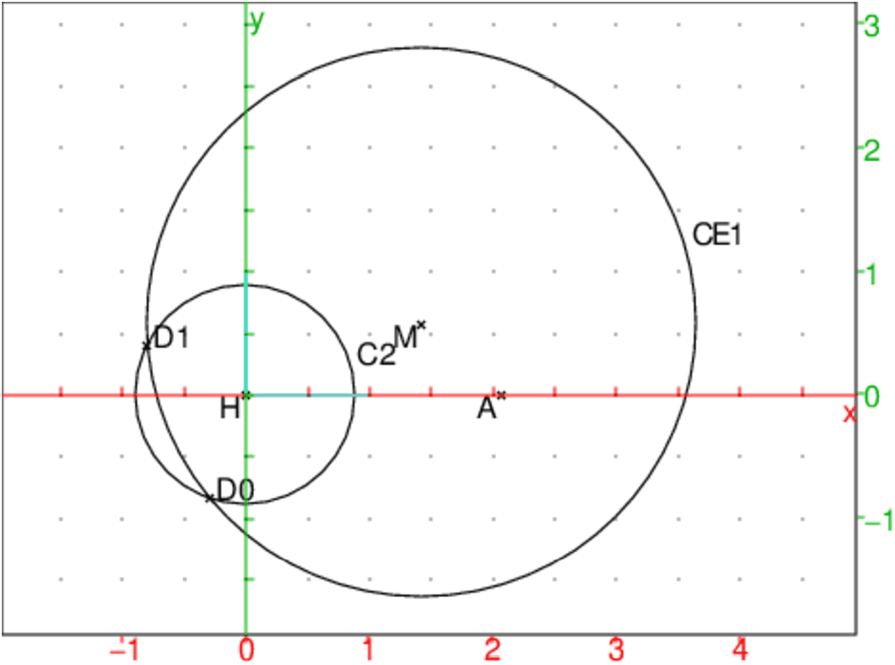
On tape :
H:=point(0); A:=point(l3); M:=point(y0,z0); h4:=sqrt(l2^2-l4^2/4); C1:=cercle(M,h4); C2:=cercle(H,L2*sin(c0)); D0,D1:=inter(CE1,CE2); coordonnees(D0); coordonnees(D1);
On obtient pour D0:
[-0.302153034804,-0.84169164544]
On obtient pour D1:
[-0.800148906999,0.399378278168]
Donc dans l’espace le point D a comme abscisse l2/2=1.25373789827 et a
donc comme coordonnèes 3d :
[1.25373789827,−0.302153034804,−0.84169164544]
ou :
[1.25373789827,−0.800148906999,0.399378278168]
Il y a donc comme solutions :
B de coordonnées 0.111689118901, 1.42546684563, 0.571987598417
F de coordonnées 2.39578667764, 1.42546684563, 0.571987598417
D de coordonnées 1.25373789827, −0.302153034804, −0.84169164544
soit
B de coordonnées 0.111689118901, 1.42546684563, 0.571987598417
F de coordonnées 2.39578667764, 1.42546684563, 0.571987598417
D de coordonnées 1.25373789827, −0.800148906999, 0.399378278168
soit
B de coordonnées 0.111689118901, 1.42546684563, −0.571987598417
F de coordonnées 2.39578667764, 1.42546684563, −0.571987598417
D de coordonnées 1.25373789827, −0.302153034804, +0.84169164544
soit
B de coordonnées 0.111689118901, 1.42546684563, −0.571987598417
F de coordonnées 2.39578667764, 1.42546684563, −0.571987598417
D de coordonnées 1.25373789827, −0.800148906999, −0.399378278168
Comme pour le cyclohexane on va paramétrer les points D,B,F.
On a :
CD=L2 et DCE=c0 donc :
D est le point de coordonnées :
L2cos(c0),L2sin(c0)*(1−w2)/(1+w2),L2sin(c0)*2*w/(1+w2)
B est le transfomé du point de coordonnées :
L2cos(c2),−L2sin(c2)*(1−u2)/(1+u2),2L2sin(c2)u/(1+u2) dans la
rotation d’axe Ck et d’angle c1 :
F est le transfomé du point de coordonnées :
L2cos(c2),l2−L2sin(c2)*(1−v2)/(1+v2),2L2sin(c2)v/(1+v2) dans la
rotation d’axe Ek et d’angle −c1.
On cherche à résoudre le système constitué des 3 relations :
P=AB*AF−L12*cos(t1)=0
Q=ED*EF−L22*cos(t2)=0
R=CD*CB−L22*cos(t2)=0
Du fait de la symétrie par rapport à la médiatrice de CE, les
polynômes Q et R auront les mêmes coefficients et le polynôme P sera
symétrique en u et v.
Pour privilégier, la symétrie par rapport à la médiatrice de CE, on se
place dans le repère orthonormé direct :
C,i,j,k tel que
i dirige CE, j dirige
HA où H est le milieu de CE.
On ne fera pour le glucose que le calcul approché des coefficients de P,
Q et R.
On a les mêmes notations qu’en géométrie :
L1=1.43;L2=1.54;t1=106*pi/180.;t2=109*pi/180.;c0=71*pi/360.
c1=ECA
cc1=cos(c1)=l2/(2l1)
sc1=sin(c1)=l3/l1
E est le point de coordonnées (l2,0,0)
A a pour coordonnées : l2/2,l3,0
CD=L2 donc, D est le point de coordonnées :
L2*cos(c0),L2*sin(c0)*(1−w2)/(1+w2),L2*sin(c0)*2*w/(1+w2)
B est l’image du point de coordonnées :
L2*cos(c2),−L2*sin(c2)*(1−u2)/(1+u2),L2*sin(c2)*2*u/(1+u2)]
par la rotation d’axe Ck d’angle c1
F est l’image du point de coordonnées :
[L2*cos(c2),l2−L2*sin(c2)*(1−v2)/(1+v2),L2*sin(c2)*2*v/(1+v2)]
par la rotation d’axe Ek d’angle −c1
F est aussi le symétrique par rapport au plan médiateur de CE
du point B de paramètre w.
On tape :
L1:=1.43;L2:=1.54;
t1:=106*pi/180.;
t2:=109*pi/180.;
a2:=71*pi/360.;
l1:=sqrt(normal(L1^2+L2^2-2*L1*L2*cos(t2)));
l2:=sqrt(normal(2*L2^2-2*L2^2*cos(t2)));
l3:=sqrt(normal(l1^2-l2^2/4));
l4:=sqrt(normal(2*L1^2-2*L1^2*cos(t1)));
sc1:=sqrt(normal(l3^2/(l1^2)));
cc1:==sqrt(normal(l2^2/(4*l1^2)));
sc2:=L1/l1*sin(t2);
cc2:==(L2-L1*cos(t2))/l1;
cC:=coordonnees(point(0,0,0));
cE:=coordonnees(point(l2,0,0));
cA:=coordonnees(point(l2/2,l3,0));
cD:=normal([L2*cos(a2),L2*sin(a2)*(1-w^2)/(1+w^2),
L2*sin(a2)*2*w/(1+w^2)]);
cB:=normal(coordonnees(rotation(droite(x=0,y=0),c1,
point(L2*cc2,-L2*sc2*(1-u^2)/(1+u^2),
L2*sc2*2*u/(1+u^2)))));
cB:=normal(subst(subst(cB,cos(c1),cc1),sin(c1),sc1));
cF:=normal(subst([l2-cB[0],cB[1],cB[2]],u,v));
P:=numer((cB-cA)*(cF-cA)-L1^2*cos(t1));
Q:=numer((cD-cE)*(cF-cE)-L2^2*cos(t2));
R:=numer(cB*cD-L2^2*cos(t2));
On obtient les coefficients approchés de P, Q et de R.
P:=−0.918886458988*u2*v2+1.50972814948*u2+2.96432403045*u*v+1.50972814948*v2+2.56689196034
Q:=−0.696642093056*v2*w2+2.05453942839*v2+3.07941052911*v*w+1.94741717452*w2+3.10242421803
R:=−0.696642093056*u2*w2+2.05453942839*u2+3.07941052911*u*w+1.94741717452*w2+3.10242421803
Pour faire un calcul exact, on pose :
L1:=143/100;L2:=154/100;t1:=106*pi/180.;t2:=109*pi/180.
Si c0=π/2−t2/2=71*π/360, on évalue :
cos(t2), cos(c0) et sin(c0) en fonction de t:=tan(71π/720) :
cos(t2)=2cos(t2/2)2−1=2sin(c0)2−1=8t2/(1+t2)2−1=−t4+6t2−1/(1+t2)2
sin(t2)=2cos(t2/2)*sin(t2/2)=2sin(c0)cos(c0)=
4t(1−t2)/(1+t2)2=4t−4t3/(1+t2)2
cos(c0)=1−t2/1+t2
sin(c0)=2t/1+t2
On a donc :
l1=AC=AE=√L12+L22−2*L1*L2*(−t4+6*t2−1)/(1+t2)2
l2=CE=√2*L22−2*L22*(−t4+6*t2−1)/(1+t2)2
l3=AH=√l12−l22/4)
On tape :
L1:=143/100;L2:=154/100;
t1:=106*pi/180;t2:=109*pi/180;
t:=tan(71*pi/720);
l1:=sqrt(normal(L1^2+L2^2-2*L1*L2*(-t^4+6*t^2-1)/(1+t^2)^2));
l2:=sqrt(normal(2*L2^2-2*L2^2*(-t^4+6*t^2-1)/(1+t^2)^2));
l3:=sqrt(normal(l1^2-l2^2/4));
l4:=sqrt(normal(2*L1^2-2*L1^2*cos(t1)));
sc1:=sqrt(normal(l3^2/l1^2));
cc1:==sqrt(normal(l2^2/(4*l1^2)));
sc2:=normal(L1/l1*(4t-4t^3)/(1+t^2)^2);
cc2:==normal((L2-L1*(-t^4+6*t^2-1)/(1+t^2)^2)/l1);
cC:=coordonnees(point(0,0,0));
cE:=coordonnees(point(l2,0,0));
cA:=coordonnees(point(l2/2,l3,0));
cD:=normal([L2*(1-t^2)/(1+t^2),
L2*2*t/(1+t^2)*(1-w^2)/(1+w^2),L2*4*t/(1+t^2)*w/(1+w^2)]);
cB:=normal(coordonnees(rotation(droite(x=0,y=0),c1,
point(L2*cc2,-L2*sc2*(1-u^2)/(1+u^2),
L2*sc2*2*u/(1+u^2)))));
cB:=normal(subst(subst(cB,cos(c1),cc1),sin(c1),sc1));
//cF:=normal(coordonnees(rotation(droite(x=l2,y=0),-c1,
//point(l2-L2*cc2,-L2*sc2*(1-v^2)/(1+v^2),L2*sc2*2*v/(1+v^2)))));
cF:=normal(subst([l2-cB[0],cB[1],cB[2]],u,v));
Pe:=numer((cB-cA)*(cF-cA)-L1^2*cos(t1));
Qe:=numer((cD-cE)*(cF-cE)-L2^2*(-t^4+6*t^2-1)/(1+t^2)^2);
Re:=numer(cB*cD-L2^2*(-t^4+6*t^2-1)/(1+t^2)^2);
mais cela donne des expressions vraiment compliquées !!!
On a:
P=α1 u2v2+β1(u2+v2)+γ1 uv+δ1=−0.918886458988*u2v2+1
1.50972814948*u2+2.96432403045*u*v+1.50972814948*v2+2.56689196034
R=α u2w2+β u2+γ uw++η w2δ=(−0.696642093056)*u2*w2+
2.05453942839*u2+3.07941052911*u*w+1.94741717452*w2+3.10242421803
^2+beta;^2+delta;alpha1:=-0.918886458988;
beta1:=1.50972814948;
gamma1:=2.96432403045;
delta1:=2.56689196034;
alpha:=-0.696642093056;
beta:=2.05453942839;
gamma:=3.07941052911;
eta:=1.94741717452;
delta:=3.10242421803;
a:=alpha*w^2+beta;
b:=gamma*w;
c:=eta*w^2+delta;
Eq:=normal(alpha1*c^2+beta1*(b^2-2*c*a)+gamma1*c*a+
delta1*a^2);
On obtient :^4-4.2362009215*w^2+1.63945920012
On tape pour éliminer w des équations Q=0,R=0 :
RQ:=resultant(exact(Q),exact(R),w)
On tape pour éliminer v des équations P=0,RQ=0 :
PRQ:=resultant(exact(P),RQ,v)
On tape pour résoudre l’équation en u PRQ=0 :
solve(PRQ=0,u)
On trouve 2 solutions réelles pour u :
[2.62981213079,-2.62981213079]
On tape pour résoudre l’équation en v
subst(RQ,u,2.62981213079)=0 :
solve(subst(RQ,u,2.62981213079)=0,v)
On trouve pour v :
[-1.38377770635,2.62981187867,2.62981232198,4.13642081511]
On tape pour résoudre l’équation en w subst(R,u,2.62981213079)=0 :
solve(subst(R,u,2.62981213079)=0,v)
On trouve pour w :
[-1.42146544174,4.24267305306]
Il reste à vérifier parmi ces solutions celles qui vérifient :
P=0,Q=0,R=0.
u,v,w:=2.62981213079,-1.38377770635,-1.42146544174 pas bon car
P,Q,R renvoie :
-7.0571646318,14.3332486634,6.43467501504e-11
u,v,w:=2.62981213079,2.62981187867,-1.42146544174 bon car
P,Q,R renvoie :
4.45846289665e-06,2.45798105425e-07,6.43467501504e-11
u,v,w:=2.62981213079,2.62981232198,-1.42146544174 bon car
P,Q,R renvoie :
-3.38296679558e-06,-1.86282647974e-07,6.43467501504e-11
u,v,w:=2.62981213079,4.13642081511,-1.42146544174 pas bon car
P,Q,R renvoie :
-37.6474413798,1.72803993337e-10,6.43467501504e-11
u,v,w:=2.62981213079,-1.38377770635,4.24267305306 pas bon car
P,Q,R renvoie :
-32.1653712253,-83435.2258003-144.016035042*i,-9.13125437063e+14
u,v,w:=2.62981213079,2.62981187867,4.24267305306 bon car
P,Q,R renvoie :
4.45846289665e-06,1.06109131082e-05,8.6524210019e-10
u,v,w:=2.62981213079,2.62981232198,4.24267305306 bon car
P,Q,R renvoie :
-3.38296679558e-06,-8.04602305493e-06,-1.10418341137e-10
u,v,w:=2.62981213079,4.13642081511,4.24267305306 pas bon car
P,Q,R renvoie :
-37.6474413798,-87.2031710848,-1.10418341137e-10
Donc les solutions approchées sont u,v,w :
2.62981213079,2.62981187867,-1.42146544174
2.62981213079,2.62981187867,4.24267305306
On retrouve les valeurs précédentes qui étaient meilleures:
[2.62981213076,2.62981213076,-1.42146544175] pour lesquelles
P,Q,R=-6.62367938276e-11,-6.89368562234e-11,-6.89368562234e-11
[2.62981213076,2.62981213076,4.24267305313] pour lesquelles
P,Q,R=-6.62367938276e-11,1.35003119794e-11,1.35003119794e-11
Pour le cyclohexane
le modéle en carton
Pour avoir le modéle on tape dans un niveau de géométrie 2d :
a1:=71*pi/360; l:=2*cos(a1); A:=point(0);C:=point(l); triangle_equilateral(A,C,E); B:=point(l/2-i*sin(a1)); triangle_isocele(B,A,-109*pi/180); F:=rotation(A,pi/3,point(l/2+i*sin(a1))); triangle(A,E,F); D:=rotation(C,-pi/3,point(l/2+i*sin(a1))); triangle(C,E,D); DD:=translation(C-A,B)); triangle(B,C,DD); FF:=translation(E-C,D); triangle(E,D,FF); BB:=translation(A-E,F); triangle(F,A,BB); H:=milieu(A,C); segment(F,D,affichage=2);H1:=milieu(F,D); angle(A,B,C,"a1");angle(A,C,E,"a");
Pour le glucose
le modéle en carton
Pour avoir le modéle on tape :
L1:=1.43;L2:=1.54; t1:=106*pi/180.; t2:=109*pi/180.; c0:=71*pi/360.; l1:=sqrt(normal(L1^2+L2^2-2*L1*L2*cos(t2))); l2:=sqrt(normal(2*L2^2-2*L2^2*cos(t2))); l3:=sqrt(normal(l1^2-l2^2/4)); l4:=sqrt(normal(2*L1^2-2*L1^2*cos(t1))); A:=point(l2/2,l3); C:=point(0); E:=point(l2); H:=point(l2/2); D:=point(L2*cos(c0),-L2*sin(c0)); triangle(A,C,E); triangle(D,C,E); B:=inter_unique(cercle(C,L2),cercle(A,L1)); F:=inter_unique(cercle(E,L2),cercle(A,L1)); triangle(A,C,B); triangle(A,E,F); FF:=D+l2; triangle(D,E,FF); BB:=similitude(F,l4/L1,-37*pi/180,A); triangle(A,BB,F); DD:=similitude(B,l2/L2,-71*pi/360,C); triangle(C,B,DD);
les notations
Pour avoir la figure avec les notations, on tape :
A:=point(l2/2,l3); C:=point(0); E:=point(l2); H:=point(l2/2); D:=point(L2*cos(c0),-L2*sin(c0)); triangle(A,C,E); triangle(D,C,E); angle(C,D,E,"c0"); angle(E,C,D,"c0"); angle(C,E,A,"c1"); angle(E,A,C,"c1"); B:=inter_unique(cercle(C,L2),cercle(A,L1)); F:=inter_unique(cercle(E,L2),cercle(A,L1)); triangle(A,C,B); triangle(A,E,F); angle(C,A,B,"c2"); angle(A,C,B,"a3"); angle(D,E,C,"t2"); angle(F,A,E,"t2"); angle(B,A,C,"t2"); angle(A,F,E,"a3"); angle(E,F,A,"c2"); legende(milieu(A,B),"L1",quadrant2); legende(milieu(C,B),"L2",quadrant2); legende(milieu(C,D),"L2",quadrant3); segment(A,H); legende(milieu(A,H),"l3",quadrant3); legende(milieu(A,C),"l1",quadrant2); legende(milieu(E,C),"l2",quadrant4); BB:=point(3.3); FF:=point(3.3+l4); AA:=point(3.3+l4/2,L1*sin(37*pi/180),affichage=quadrant1); triangle(AA,BB,FF); angle(AA,BB,FF,"t1"); legende(milieu(AA,BB),"L1",quadrant2); legende(milieu(AA,FF),"L1");